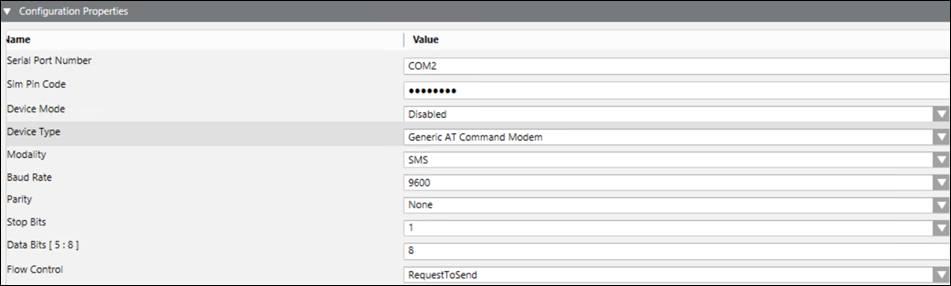
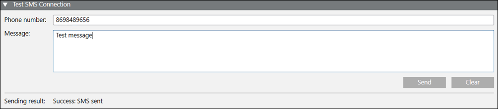
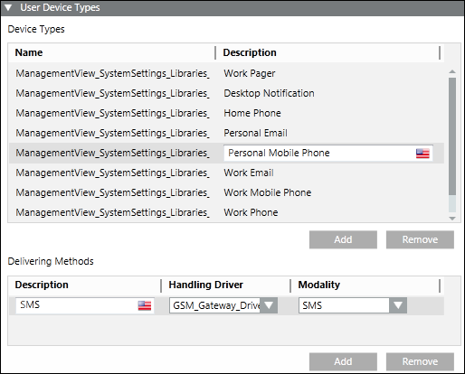

Create a Serial Modem Device
- Select Project > Field Networks > GSM Modem Field Network.
- Click the Network Editor tab.
- Click Create
 .
. - In the New object dialog box, select the child type Serial Gateway Device and then enter a name and description.
- Click OK.
- In the Device Editor tab that displays, proceed as follows:
- In the Device Settings expander, enter a description.
- In the Configuration Properties expander, proceed as follows (For more information refer to the GSM Modem Device section in Notification Supported HW/SW Device Configurations Guide):

- In the Serial Port Number field, enter the valid COM port address of the device, with the format COM [unsigned integer number], for example, COM101.
- (Optional) Enter a value into the SIM PIN Code field.
Three incorrect SIM PIN code attempts lead to SIM block.
The SIM PUK is required to unblock it.
NOTE: You must contact the carrier (service provider) that issued the SIM card to obtain the PUK code. - From the Device Mode drop-down list, select Operational so that the driver processes the messaging command and the device configuration change command, and performs status checks for the device. You can also select:
- Disabled: In this mode, the driver does not process the messaging command, or the device configuration change command, and can perform status checks for the device. The device remains in a disconnected state.
- Administrative: In this mode, the driver processes the device configuration change command and performs status checks for the device. The device will be in a Disconnected/Connected state based on the connection state. - Select the type of Device Type that must be integrated.
- From the Modality drop-down list, select the type of delivery that can be performed by the device, for example, SMS.
- From the drop-down list, select the Baud Rate the device is using serially.
- From the drop-down list, select the Parity used by the device is.
- From the drop-down list, select the number of Stop Bits the device serial protocol is using.
- Select the number of Data Bits the device is using to communicate serially. The value range is 5 to 8 bits.
- Select the type of Flow Control mechanism used by the GSM Modem device.
- In the Test SMS Connection expander, you can send a test text message.

- Enter the phone number in the Phone number field.
- Enter the text message to be sent in the Message field.
- Click Send to send the test message.
- The sending result is displayed in the expander after the message is sent.
NOTE: While test SMS connection, set device mode as disabled for the remaining Serial and IP modems. - Open the Routing Configuration expander and configure the parameters (see Routing Configuration Expander from the Devices section).
- Click Save
 .
.
- The user device type is automatically configured. In the Recipient Editor tab, under the User Device Types expander, you can see that the GSM Gateway Driver is set as the handling driver and modality is set as SMS.
